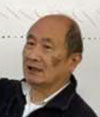

Chen-Hanson TingChen-Hanson Ting - August 29, 1939 - May 30, 2022 Chen-Hanson Ting was born in Kun-Ming, Yun-Nan, China, son of Chen-Wei and Ya-Hgoo (Hwang) Ting. He came to the United States in 1975. He was awarded a Bachelor of Science degree from the National Taiwan U. in 1961 and a Master of Science and PhD degrees in Chemistry from the University of Chicago in 1963 and 1965. He was a Research Fellow at the California Institute Technology, Pasadena from 1965-1967, visiting Associate Professor at National Taiwan U., Taipei from 1967-1969, Professor of Chemistry at Chung-Cheng Institute Technology, Taoyuan, Taiwan from 1969-1975, a staff scientist at Lockheed Missile and Space Company in Palo Alto, California from 1976-1988, a software engineer at Maxtor Corporation in San Jose, California from 1988-1989, a staff software engineer at Applied Biosystems, Inc.in Foster City, California from 1989-2000, and Vice President of the Forth Interest Group in San Jose from 1990-1991. Chen-Hanson Ting is listed as a noteworthy Software Engineer by Marquis Who's Who. (unconfirmed) As an American software engineer, Chen-Hanson Ting's achievements include the design and programming of a high-energy real time radiographic inspection system and a catalyst microbiology workstation (patent pending). He designed, implemented, and developed the eForth computer language on multiple microprocessors including Arduino, MSP430, and ARM. He authored several FPGA-based microprocessors in VHDL: eP8, eP16, eP24, and eP32. The documentation of these efforts were offered by Offete Enterprises, starting in 1975 and are now available online. He was the recipient of the Figgy Award from the Forth Interest Group in 1986. He is survived by his wife and three children. Links: |